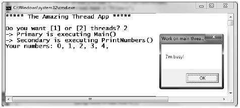

When you wish to programmatically create additional threads to carry on some unit of work, you will follow a very predictable process:
As stated in step 2, you may make use of two distinct delegate types to “point to” the method that the secondary thread will execute. The ThreadStart delegate has been part of the System.Threading namespace since .NET 1.0, and it can point to any method that takes no arguments and returns nothing. This delegate can be helpful when the method is designed to simply run in the background without further interaction.
The obvious limitation of ThreadStart is that you are unable to pass in parameters for processing. However, the ParameterizedThreadStart delegate type allows a single parameter of type System.Object. Given that anything can be represented as a System.Object, you can pass in any number of parameters via a custom class or structure. Do note, however, that the ParameterizedThreadStart delegate can only point to methods that return void.
To illustrate the process of building a multithreaded application (as well as to demonstrate the usefulness of doing so), assume you have a Console Application (SimpleMultiThreadApp) that allows the end user to choose whether the application will perform its duties using the single primary thread or split its workload using two separate threads of execution.
Assuming you have imported the System.Threading namespace, your first step is to define a method to perform the work of the (possible) secondary thread. To keep focused on the mechanics of building multithreaded programs, this method will simply print out a sequence of numbers to the console window, pausing for approximately two seconds with each pass. Here is the full definition of the Printer class:
public class Printer { public void PrintNumbers() { // Display Thread info. Console.WriteLine("-> {0} is executing PrintNumbers()", Thread.CurrentThread.Name); // Print out numbers. Console.Write("Your numbers: "); for(int i = 0; i < 10; i++) { Console.Write("{0}, ", i); Thread.Sleep(2000); } Console.WriteLine(); } }
Now, within Main(), you will first prompt the user to determine whether one or two threads will be used to perform the application’s work. If the user requests a single thread, you will simply invoke the PrintNumbers() method within the primary thread. However, if the user specifies two threads, you will create a ThreadStart delegate that points to PrintNumbers(), pass this delegate object into the constructor of a new Thread object, and call Start() to inform the CLR this thread is ready for processing.
To begin, set a reference to the System.Windows.Forms.dll assembly (and import the System.Windows.Forms namespace) and display a message within Main() using MessageBox.Show() (you’ll see the point of doing so once you run the program). Here is the complete implementation of Main():
static void Main(string[] args) { Console.WriteLine("***** The Amazing Thread App *****\n"); Console.Write("Do you want [1] or [2] threads? "); string threadCount = Console.ReadLine(); // Name the current thread. Thread primaryThread = Thread.CurrentThread; primaryThread.Name = "Primary"; // Display Thread info. Console.WriteLine("-> {0} is executing Main()", Thread.CurrentThread.Name); // Make worker class. Printer p = new Printer(); switch(threadCount) { case "2": // Now make the thread. Thread backgroundThread = new Thread(new ThreadStart(p.PrintNumbers)); backgroundThread.Name = "Secondary"; backgroundThread.Start(); break; case "1": p.PrintNumbers(); break; default: Console.WriteLine("I don't know what you want...you get 1 thread."); goto case "1"; } // Do some additional work. MessageBox.Show("I'm busy!", "Work on main thread..."); Console.ReadLine(); }
Now, if you run this program with a single thread, you will find that the final message box will not display the message until the entire sequence of numbers has printed to the console. As you are explicitly pausing for approximately two seconds after each number is printed, this will result in a lessthan- stellar end-user experience. However, if you select two threads, the message box displays instantly, given that a unique Thread object is responsible for printing out the numbers to the console (see Figure 19-2).
Figure 19-2 Multithreaded applications provide results in more responsive applications
Recall that the ThreadStart delegate can point only to methods that return void and take no arguments. While this may fit the bill in many cases, if you wish to pass data to the method executing on the secondary thread, you will need to make use of the ParameterizedThreadStart delegate type. To illustrate, let’s re-create the logic of the AsyncCallbackDelegate project created earlier in this chapter, this time making use of the ParameterizedThreadStart delegate type.
To begin, create a new Console Application named AddWithThreads and import the System.Threading namespace. Now, given that ParameterizedThreadStart can point to any method taking a System.Object parameter, you will create a custom type containing the numbers to be added:
class AddParams { public int a, b; public AddParams(int numb1, int numb2) { a = numb1; b = numb2; } }
Next, create a static method in the Program class that will take an AddParams parameter and print out the sum of the two numbers involved:
static void Add(object data) { if (data is AddParams) { Console.WriteLine("ID of thread in Add(): {0}", Thread.CurrentThread.ManagedThreadId); AddParams ap = (AddParams)data; Console.WriteLine("{0} + {1} is {2}", ap.a, ap.b, ap.a + ap.b); } }
The code within Main() is straightforward. Simply use ParameterizedThreadStart rather than ThreadStart:
static void Main(string[] args) { Console.WriteLine("***** Adding with Thread objects *****"); Console.WriteLine("ID of thread in Main(): {0}", Thread.CurrentThread.ManagedThreadId); // Make an AddParams object to pass to the secondary thread. AddParams ap = new AddParams(10, 10); Thread t = new Thread(new ParameterizedThreadStart(Add)); t.Start(ap); // Force a wait to let other thread finish. Thread.Sleep(5); Console.ReadLine(); }
In these first few examples, you have made use of a few crude ways to inform the primary thread to wait until the secondary thread has completed. During your examination of asynchronous delegates you used a simple bool variable as a toggle; however, this is not a recommended solution, as both threads can access the same point of data, and this can lead to data corruption. A safer, but still undesirable alternative is to call Thread.Sleep() for a fixed amount of time. The problem here is you don’t want to wait longer than necessary.
One simple, and thread safe way to force a thread to wait until another is completed is to use the AutoResetEvent class. In the thread which needs to wait (such as a Main() method), create an instance of this class, and pass in false to the constructor in order to signify you have not yet been notified. Then, at the point at which you are willing to wait, call the WaitOne() method. Here is the update to Program class which will do this very thing using a static level AutoResetEvent member variable:
class Program { private static AutoResetEvent waitHandle = new AutoResetEvent(false); static void Main(string[] args) { Console.WriteLine("***** Adding with Thread objects *****"); Console.WriteLine("ID of thread in Main(): {0}", Thread.CurrentThread.ManagedThreadId); AddParams ap = new AddParams(10, 10); Thread t = new Thread(new ParameterizedThreadStart(Add)); t.Start(ap); // Wait here until you are notified! waitHandle.WaitOne(); Console.WriteLine("Other thread is done!"); Console.ReadLine(); } ... }
When the other thread is completed with its workload, it will call the Set() method on the same instance of the AutoResetEvent type:
static void Add(object data) { if (data is AddParams) { Console.WriteLine("ID of thread in Add(): {0}", Thread.CurrentThread.ManagedThreadId); AddParams ap = (AddParams)data; Console.WriteLine("{0} + {1} is {2}", ap.a, ap.b, ap.a + ap.b); // Tell other thread we are done. waitHandle.Set(); } }
Source Code The AddWithThreads project is included under the Chapter 19 subdirectory.
Now that you have seen how to programmatically create new threads of execution using the System.Threading namespace, let’s formalize the distinction between foreground threads and background threads.
It is important to note that foreground and background threads are not synonymous with primary and worker threads. By default, every thread you create via the Thread.Start() method is automatically a foreground thread. Again, this means that the AppDomain will not unload until all threads of execution have completed their units of work. In most cases, this is exactly the behavior you require.
For the sake of argument, however, assume that you wish to invoke Printer.PrintNumbers() on a secondary thread that should behave as a background thread. Again, this means that the method pointed to by the Thread type (via the ThreadStart or ParameterizedThreadStart delegate) should be able to halt safely as soon as all foreground threads are done with their work. Configuring such a thread is as simple as setting the IsBackground property to true:
static void Main(string[] args) { Console.WriteLine("***** Background Threads *****\n"); Printer p = new Printer(); Thread bgroundThread = new Thread(new ThreadStart(p.PrintNumbers)); // This is now a background thread. bgroundThread.IsBackground = true; bgroundThread.Start(); }
Notice that this Main() method is not making a call to Console.ReadLine() to force the console to remain visible until you press the Enter key. Thus, when you run the application, it will shut down immediately because the Thread object has been configured as a background thread. Given that the Main() method triggers the creation of the primary foreground thread, as soon as the logic in Main() completes, the AppDomain unloads before the secondary thread is able to complete its work.
However, if you comment out the line that sets the IsBackground property, you will find that each number prints to the console, as all foreground threads must finish their work before the AppDomain is unloaded from the hosting process.
For the most part, configuring a thread to run as a background type can be helpful when the worker thread in question is performing a noncritical task that is no longer needed when the main task of the program is finished. For example, you may build an application which pings an e-mail server every few minutes for new e-mails, updates current weather conditions, or some other non-critical task.